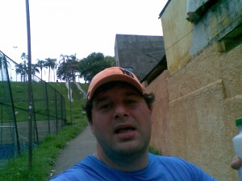

vamo, vamo, vamo…
Devagar e sempre
Ontem postei um desabafo por causa dos treinos fracos que ando fazendo. O pior estava na escasses dos mesmos.
Hoje fui para rua novamente e fiquei pensando na fase que enfrento, na ansiedade que estou vivendo. E lembrei que umas das raz√µes que entrei nessa “de correr”, foi para controlar a ansiedade. Uso os treinos para equilibrar a ansiedade do dia-a-dia. Acontece que as vezes a ansiedade provoca o efeito de não querer fazer nada, a Pregui√ßa. Já na rua, primeira vit√≥ria contra a pregui√ßa, as pernas não respondiam bem. A vontade era nem sair da cama. Mesmo assim mantive um trote lento. Mais lento que o de ontem.
Foi então que lembrei do “primeiro mandamento” do Karnazes: Seja Paciente. No qual já escrevi um post sobre isso, neste post falo justamente da ansiedade.
Mantive o r√≠timo, trotei por 45 minutos seguidos, caminhei 1 minuto (final da subidinha) e trotei mais 3 minutos at√© chegar em casa, total de 49 minutos, com a mesma dist√¢ncia de ontem. Mas sem dores fortes. A melhora foi de apenas 2 minutos, mas como trotei lento o tempo todo, tive um trabalho muscular mais vigoroso. Estou com as pernas doendo agora… üôÇ
Hoje a endorfina trouxe mais resultado que ontem. E se continuar assim a guerra contra a ansiedade será vencida em menos de 1 semana. E vamo, vamo, vamo…
.jpg "DSC01771 (1024x576)")
.jpg "DSC01821 (1024x576)")
.jpg "DSC01828 (1024x576)")
.jpg "DSC01884 (1024x576)")


{kind=link}
{kind=link}
oi, alex!
taí, é isso mesmo!
devagar, e sempre, sempre funciona!
o importante é fazer o odômetro girar, como disse um colega blogueiro;)
bjs
Foda foda foda matar a preguiça, mas o problema é que quanto mais parado ficar mais preguiça vai dar, o esquema é não deixar de ir pelo menos um dia sim, um dia não
Pelo menos pra mim funciona üôÇ
Vamu que vamu
Abraços
Chuta essa preguiça!! E sempre lembra que tem uma galera torcendo pra ti ver vencendo! Abraço
Alecão,
vc já matou a charada………. então, bola pra frente!!!!
respire fundo e durante seus treinos contemple apenas as paisagens, repare nas constru√ß√µes, na natureza, deixe para ver o rel√≥gio s√≥ quando achar que deve parar……………
assim, vc nao sentirá como peso o dia de treino,
veja por uma outra ótica!!!
vc já mostrou sua força de vontade, então olhe para cima!!!!
“Fazer o odometro rodar”, gostei desta frase!
Sintetiza bem o espírito. Tem que ser divertido, tem que trazer prazer. As vezes é difícil cair a ficha, mesmo já tendo caído no passado. Elis, vou focar nesta frase.
Rafael, me identifico com sua jornada pois √© parecida com a minha. Com certeza, a pregui√ßa √© meu maior mal. Mas estou superando. Hoje fiz um treino leve (corrida de 13 minutos e caminhada de 17) por conta das dores… Mas amanhã farei um longão (8K para os meus padr√µes). E tentarei cutir muito o trajeto como a Ana recomendou….
Vamo, vamo, vamo…
Brother Alecão, nunca desista, tenha certeza você é um espelho para outras pessoas, não precisa ser para tantas, as vezes sendo a apenas uma pessoa ou a um filho já é mais do que suficiente, eu mesmo, sempre passo por aqui para adquirir garra e levar a vida, pois aqui todos são vencedores, pelo simples fato de não cruzarem os braços e esperarem que algo aconteça.
Estou numa fase chata talvez at√© injusta para algu√©m da minha idade, tive que cortar os meus treinos, que já eram bem suaves para não ter problemas, mas infelizmente tive, e por motivos de saúde, agora passarei por um per√≠odo assistido “m√©dico”, para que eu consiga controlá-lo.
Mas NUNCA desistirei.
Forte abraço.
Puxa Renato. Gosto de escrever no blog, por 2 motivos, desabafar e receber feedback para me motivar. O se feedback me motivou e muito. Fiquei com vontade de sair correndo, pena que agora não posso.
Quanto ao seu caso. √â um caso para voc√™ se superar. Estou na torcida e na certeza que logo voltará a praticar esportes. Vamo, vamo, vamo…